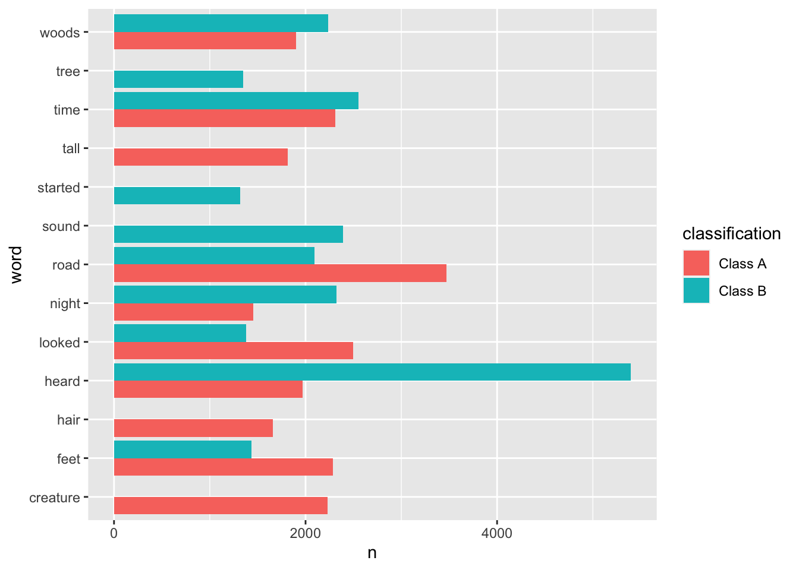
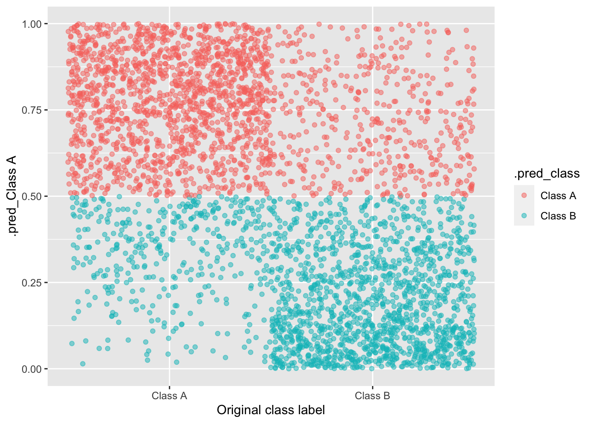
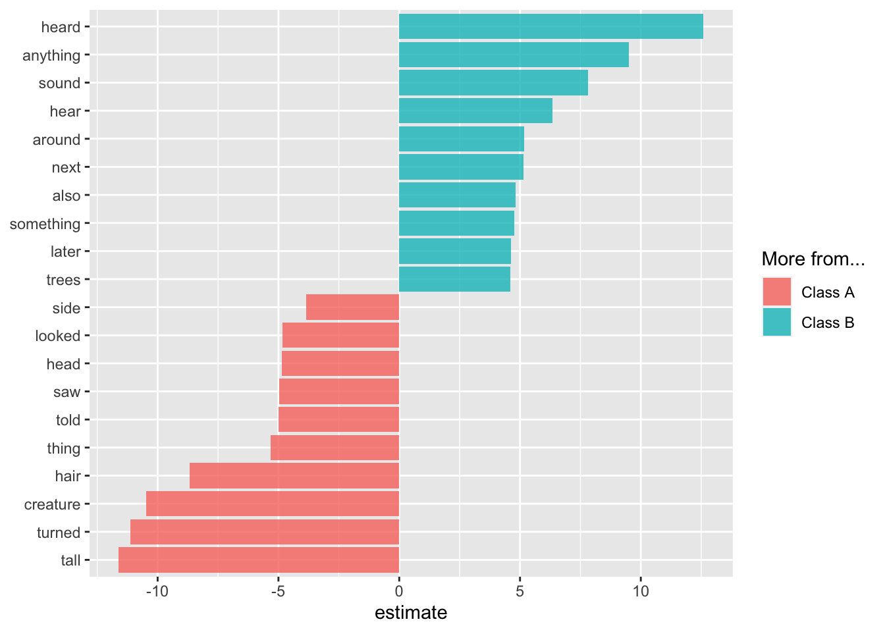

Bigfoot
Today’s analysis is much due to Julia Silge’s screencast on chocolate ratings.
bigfoot <- read_csv("bigfoot.csv") %>%
filter(classification != "Class C")Tokenizing Words
Using only the Class A and Class B records, we work to build a model which can distinguish between the two types of records using the observed text column.
tidy_bf <- bigfoot %>%
drop_na(observed) %>%
unnest_tokens(word, observed) %>%
filter(!word %in% stop_words$word)
tidy_bf %>%
group_by(classification) %>%
count(word, sort = TRUE) # A tibble: 40,455 × 3
# Groups: classification [2]
classification word n
<chr> <chr> <int>
1 Class B heard 5397
2 Class A road 3472
3 Class B time 2555
4 Class A looked 2499
5 Class B sound 2391
6 Class B night 2323
7 Class A time 2313
8 Class A feet 2284
9 Class B woods 2239
10 Class A creature 2232
# … with 40,445 more rows
# ℹ Use `print(n = ...)` to see more rowsDo the words differentiate across the two classes? Maybe… hard to know from just the top 10 words in each group.
tidy_bf %>%
group_by(classification) %>%
count(word, sort = TRUE) %>%
slice_max(order_by = n, n = 10) %>%
ggplot(aes(x = n, y = word, fill = classification)) +
geom_bar(stat = "identity", position = position_dodge(preserve = "single"))
Creating model
library(tidymodels)
library(textrecipes)
set.seed(47)
bf_split <- initial_split(bigfoot)
bf_test <- testing(bf_split)
bf_train <- training(bf_split)
bf_folds <- vfold_cv(bf_train)bf_rec <- recipe(classification ~ observed, data = bf_train) %>%
step_tokenize(observed) %>%
step_stopwords(observed) %>%
step_tokenfilter(observed, max_tokens = 100) %>%
step_tfidf(observed)log_spec <- logistic_reg(mode = "classification")
log_wf <- workflow(bf_rec, log_spec)Running model
doParallel::registerDoParallel()
contrl_preds <- control_resamples(save_pred = TRUE)
log_rs <- fit_resamples(
log_wf,
resamples = bf_folds,
control = contrl_preds
)Accuracy based on the cross-validation folds:
collect_metrics(log_rs)# A tibble: 2 × 6
.metric .estimator mean n std_err .config
<chr> <chr> <dbl> <int> <dbl> <chr>
1 accuracy binary 0.772 10 0.00676 Preprocessor1_Model1
2 roc_auc binary 0.834 10 0.00825 Preprocessor1_Model1collect_predictions(log_rs) %>%
ggplot(aes(y = `.pred_Class A`, color =.pred_class, x = classification)) +
geom_jitter(width = 0.5, alpha = 0.5) +
xlab("Original class label")
final_fitted <- last_fit(log_wf, bf_split)
extract_workflow(final_fitted) %>% tidy()# A tibble: 101 × 5
term estimate std.error statistic p.value
<chr> <dbl> <dbl> <dbl> <dbl>
1 (Intercept) -1.00 0.352 -2.85 0.00442
2 tfidf_observed_10 2.55 1.85 1.38 0.168
3 tfidf_observed_2 -0.408 1.47 -0.278 0.781
4 tfidf_observed_3 3.84 1.59 2.42 0.0156
5 tfidf_observed_4 3.39 1.81 1.88 0.0607
6 tfidf_observed_across 0.520 1.59 0.328 0.743
7 tfidf_observed_also 4.83 1.67 2.89 0.00388
8 tfidf_observed_animal -0.992 1.25 -0.796 0.426
9 tfidf_observed_anything 9.52 2.23 4.26 0.0000200
10 tfidf_observed_area 2.74 1.32 2.07 0.0384
# … with 91 more rows
# ℹ Use `print(n = ...)` to see more rowsAccuracy based on the testing data:
collect_metrics(final_fitted)# A tibble: 2 × 4
.metric .estimator .estimate .config
<chr> <chr> <dbl> <chr>
1 accuracy binary 0.776 Preprocessor1_Model1
2 roc_auc binary 0.844 Preprocessor1_Model1Plot the words with the largest and smallest (i.e., big negative) coefficients.
extract_workflow(final_fitted) %>%
tidy() %>%
filter(term != "(Intercept)") %>%
group_by(estimate > 0) %>%
slice_max(abs(estimate), n = 10) %>%
ungroup() %>%
mutate(term = str_remove(term, "tfidf_observed_")) %>%
ggplot(aes(estimate, fct_reorder(term, estimate), fill = estimate > 0)) +
geom_col(alpha = 0.8) +
scale_fill_discrete(labels = c("Class A", "Class B")) +
labs(y = NULL, fill = "More from...")
The plot aligns with the first bar plot, which showed the most common words from each class. One observation is that the Class A words are more specific (hair, tail, turned, ran, head, …) than the Class B words (anything, something, …).